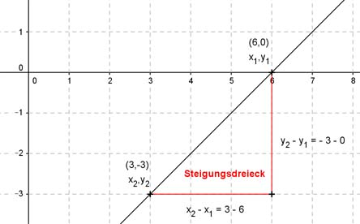

Lineare Funktionen Aufgabe 12 Bestimmen Sie die Steigung m der Geraden, die durch folgende Punkte geht: A(6|0); B(3|-3)  A (6|0) x1 y1 B (3|-3) x2 y2 y2 - y1 -3 - 0 m = --------- = -------- = 1 x2 - x1 3 - 6